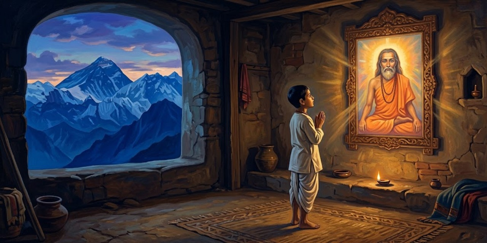
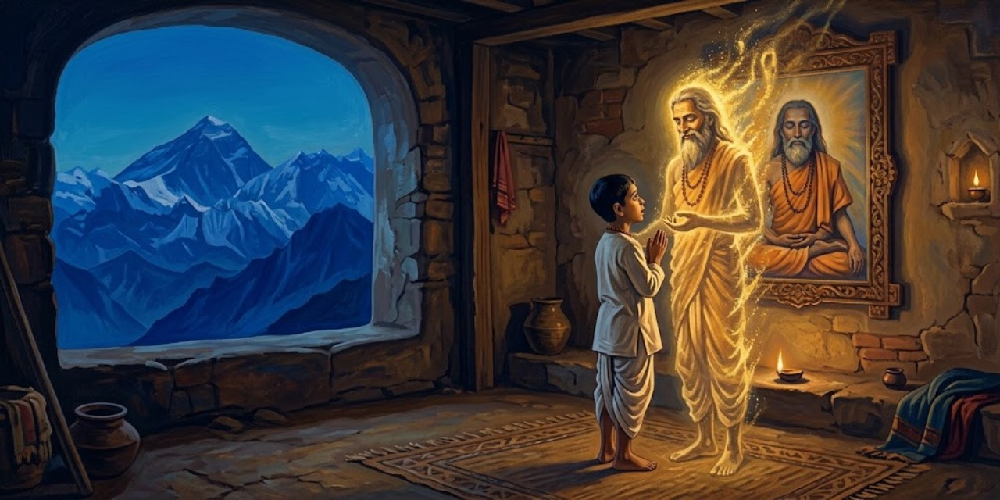

17 de octubre de 2026
Autobiografía de un yogui

Paramhansa Yogananda
Yogananda nació en la India de finales del siglo diecinueve y llegó a ser el gran introductor del yoga en Occidente. En esta autobiografía, publicada en 1946, cuenta su vida en primera persona: la infancia en Gorakhpur, la búsqueda del maestro, los años de disciplina y el largo viaje a América. Es a la vez una memoria de santos, yoguis y milagros y el libro que abrió las enseñanzas de la India a millones de lectores del mundo occidental.
Capítulo 1: Mis padres y mi primera infancia

El libro empieza con una confesión asombrosa: el autor dice que recuerda su vida anterior. De niño ya sabía que había sido un yogui del Himalaya.
Clear recollections came to me of a distant life, a yogi amidst the Himalayan snows.
Me venían recuerdos nítidos de una vida lejana: un yogui entre las nieves del Himalaya.
Yogananda
También recuerda la rabia de ser un bebé: lo entendía todo y no podía ni caminar ni hablar. Esa impotencia lo ponía a orar.
Prayerful surges arose within me as I realized my bodily impotence.
Me subían oleadas de oración al reconocer mi impotencia corporal.
Yogananda
Su padre, Bhagabati, era un matemático serio y austero; su madre, una reina de corazones, enseñaba solo con amor. Cuando ella murió, el padre cambió:
I noticed then that his gaze often metamorphosed into my mother’s.
Noté entonces que su mirada se metamorfoseaba a menudo en la de mi madre.
Yogananda
Abinash, un empleado del ferrocarril, le contó al niño cómo su padre se hizo discípulo del gran maestro Lahiri Mahasaya. Abinash había pedido permiso para visitarlo en Benarés y el padre se burló de él. Camino a casa, el corazón de Abinash repetía:
My heart was repeating: ‘Lahiri Mahasaya! I cannot live without seeing you!’
Mi corazón repetía: «¡Lahiri Mahasaya! ¡No puedo vivir sin verte!».
Abinash
En ese instante, en medio del campo, el maestro se apareció y regañó al padre:
‘Bhagabati, you are too hard on your employee!’
«¡Bhagabati, eres demasiado duro con tu empleado!».
Lahiri Mahasaya
El padre no solo dio el permiso: partió él mismo a Benarés con su esposa. Al entrar en la casita del maestro, este lo recibió con una frase que lo dejó helado:
His words were the same as those he had used two days before in the Gorakhpur field.
Sus palabras fueron las mismas que había usado dos días antes en el campo de Gorakhpur.
Yogananda
El maestro inició a los padres en la práctica del kriya yoga y les dejó una profecía sobre el hijo que vendría, según recuerda Abinash:
Lahiri Mahasaya took a definite interest in your own birth. Your life shall surely be linked with his own: the master’s blessing never fails.
«Lahiri Mahasaya se interesó de modo especial en tu propio nacimiento. Tu vida estará sin duda unida a la suya: la bendición del maestro nunca falla».
Abinash
Lahiri Mahasaya murió poco después de que Yogananda naciera, pero su retrato presidía el altar de la casa, y el niño fue descubriendo que el maestro seguía presente:
As I began to discover his secret omnipresence, I lamented no more.
Cuando empecé a descubrir su secreta omnipresencia, dejé de lamentarme.
Yogananda
A los ocho años, enfermo de cólera y ya sin esperanza de los médicos, su madre le señaló el retrato: «Inclínate ante él por dentro». El niño miró la foto:
I gazed at his photograph and saw there a blinding light, enveloping my body and the entire room.
Miré fijo su fotografía y vi allí una luz cegadora, que envolvía mi cuerpo y la habitación entera.
Yogananda
El cólera desapareció al instante. Esa foto tenía su propia historia milagrosa: el maestro odiaba que lo fotografiaran y en las placas salía borrado. Un fotógrafo presumió de que lograría retratarlo, fracasó doce veces y fue llorando a verlo. Lahiri Mahasaya le explicó:
“I am Spirit. Can your camera reflect the omnipresent Invisible?”
«Yo soy Espíritu. ¿Puede tu cámara reflejar al Invisible omnipresente?».
Lahiri Mahasaya
Al día siguiente el maestro posó por única vez: esa es la foto que sanó al niño y que se reproduce en el libro. Poco después de sanar, el niño tuvo una visión: cerró los ojos y vio sabios meditando en cuevas de montaña. Preguntó quiénes eran:
“We are the Himalayan yogis.”
«Somos los yoguis del Himalaya».
Los yoguis de la visión
El niño gritó que quería ir al Himalaya y ser como ellos. La visión se disolvió en una luz que crecía y crecía, y una voz habló desde la luz. Iswara es el Señor, Dios hecho persona:
“I am Iswara. I am Light.”
«Yo soy Iswara. Yo soy Luz».
La voz en la luz
El niño pidió fundirse en Él, y del éxtasis le quedó una frase para toda la vida:
“He is eternal, ever-new Joy!”
«¡Él es Gozo eterno, siempre nuevo!».
Yogananda
Otro recuerdo de esa época: en Lahore, el niño tenía un altar casero a la Madre Divina y una certeza absoluta:
An unequivocal conviction came over me that fulfillment would crown any of my prayers uttered in that sacred spot.
Una convicción inequívoca se apoderó de mí: toda oración hecha en ese rincón sagrado se cumpliría.
Yogananda
Su hermana Uma se burló: que pidiera entonces las dos cometas que volaban enfrente. El niño oró; una cometa cayó a sus pies y luego la otra. Uma salió corriendo, espantada:
“Indeed, Divine Mother listens to you! This is all too uncanny for me!”
«¡Es verdad, la Madre Divina te escucha! ¡Esto es demasiado raro para mí!».
Uma, su hermana
Capítulo 2: La muerte de mi madre y el amuleto místico

El deseo más grande de la madre era ver casado a Ananta, el hijo mayor. Todo estaba listo en Calcuta para la boda cuando el niño, de unos once años, tuvo una visión a medianoche en Bareilly: su madre se le apareció junto a la cama y le pidió que despertara al padre y tomara el primer tren si querían verla con vida. El padre no creyó. Por la mañana llegó el telegrama: madre grave, boda pospuesta, vengan de inmediato. Llegaron tarde. Años pasaron antes de que el dolor cediera, y la sanación llegó como respuesta a sus gritos:
“It is I who have watched over thee, life after life, in the tenderness of many mothers! See in My gaze the two black eyes, the lost beautiful eyes, thou seekest!”
«Soy yo quien te ha cuidado, vida tras vida, en la ternura de muchas madres. ¡Mira en mi mirada los dos ojos negros, los hermosos ojos perdidos que buscas!».
La Madre Divina
El padre no volvió a casarse en casi cuarenta años: «el servicio hacia mí terminó con tu madre», dijo cuando le ofrecieron una enfermera. Catorce meses después de la muerte, Ananta llamó al niño a su lado. Había acompañado a la madre en su lecho de muerte y guardaba un mensaje suyo:
“Mukunda, I have been reluctant to give you strange tidings.”
«Mukunda, me he resistido a darte noticias extrañas».
Ananta, su hermano mayor
La madre había pedido que el mensaje se entregara al cumplirse un año. Así empezaba:
“Let these words be my final blessing, my beloved son Mukunda!”
«Que estas palabras sean mi bendición final, mi amado hijo Mukunda».
La madre, en su lecho de muerte
Contaba que, siendo él un bebé, lo había llevado a Benarés, a casa de su gurú Lahiri Mahasaya. Casi escondida entre los discípulos, oraba para que el maestro se fijara en el niño:
While I patted you, I was praying that the great guru take notice and bestow a blessing. As my silent devotional demand grew in intensity, he opened his eyes and beckoned me to approach.
«Mientras te acariciaba, oraba para que el gran gurú se fijara en ti y te diera su bendición. A medida que crecía mi silenciosa demanda de devoción, él abrió los ojos y me hizo señas de acercarme».
La madre
El maestro sentó al bebé en su regazo y profetizó que sería un yogui que llevaría muchas almas a Dios. Pero el suceso más singular de su vida fue otro: un sadhu, un asceta errante, apareció un día en Lahore pidiendo ver «a la madre de Mukunda»:
‘Mother,’ he said, ‘the great masters wish you to know that your stay on earth will not be long.’
«Madre —dijo—, los grandes maestros desean que sepas que tu estancia en la tierra no será larga».
El sadhu
El sadhu anunció un amuleto de plata que se materializaría en las manos de ella al meditar; debía legarlo a Mukunda cuando estuviera listo para buscar a Dios, y, cumplido su propósito, desaparecería. A la tarde siguiente, el amuleto apareció entre sus palmas, frío y liso. Lo guardó más de dos años. Su despedida:
Do not grieve for me, as I shall have been ushered by my great guru into the arms of the Infinite.
«No te aflijas por mí, pues mi gran gurú me habrá llevado ya a los brazos del Infinito».
La madre
Con el amuleto en su poder, el niño sintió despertar memorias dormidas: venía de maestros de vidas pasadas que guiaban sus pasos. Mientras tanto, el muchacho que no lograba escaparse al Himalaya viajaba lejos cada día en las alas de su amuleto.
Capítulo 3: El santo de los dos cuerpos

El padre le permitió un viaje a Benarés con dos cartas: una para un amigo suyo cuya dirección había perdido, y otra de presentación para el swami Pranabananda, discípulo de Lahiri Mahasaya, que sabría encontrarlo. El swami lo recibió como a un viejo amigo, adivinó quién era antes de leer la carta y bromeó: gozaba de dos pensiones, una del ferrocarril por recomendación del padre y otra «del Padre Celestial», una pensión de paz insondable. Luego cayó en un silencio de esfinge, del que salió solo para anunciar que el hombre buscado llegaría en media hora. El niño no entendía nada:
The swami has spoken to no one but myself since my arrival!
«¡El swami no ha hablado con nadie más que conmigo desde que llegué!».
Yogananda
Bajó las escaleras y se topó con Kedar Nath Babu, que subía apurado: el swami lo había encontrado bañándose en el Ganges una hora antes y lo había invitado a su casa, donde, le dijo, lo esperaba el hijo de Bhagabati. El niño se quedó helado:
“Why, that man, Swami Pranabananda, has not left my sight a moment since I first came about an hour ago.”
«Pero si ese hombre, el swami Pranabananda, no se ha apartado de mi vista ni un momento desde que llegué, hace una hora».
Yogananda
Subieron juntos. El visitante susurró, señalando las sandalias de madera del santo:
“He was clad only in a loincloth, just as I see him now.”
«Iba vestido solo con el taparrabo, tal como lo veo ahora».
Kedar Nath Babu
El swami sonrió y explicó que para los yoguis verdaderos la unidad del mundo no es un misterio: pueden verse y conversar a distancia y atravesar a voluntad la materia. Luego habló de su maestro:
He was Divinity Itself in the form of flesh.
«Era la Divinidad misma en forma de carne».
Swami Pranabananda
Y contó su propia historia: ocho años meditando media noche después del trabajo en el ferrocarril, con percepciones luminosas, pero:
But a little veil always remained between me and the Infinite.
«Pero siempre quedaba un velo sutil entre el Infinito y yo».
Swami Pranabananda
Una noche entera suplicó a Lahiri Mahasaya que intercediera por él. La respuesta del maestro fue escueta:
You must meditate more profoundly.
«Debes meditar más profundamente».
Lahiri Mahasaya
El discípulo insistió hasta el alba; al fin el maestro extendió la mano: «Ya intercedí por ti ante Brahma; ve a meditar».
Immeasurably uplifted, I returned to my home. In meditation that night, the burning Goal of my life was achieved.
«Inmensamente elevado, volví a mi casa. En la meditación de esa noche, la meta ardiente de mi vida se cumplió».
Swami Pranabananda
Desde entonces:
Never from that day has the Blissful Creator remained hidden from my eyes behind any screen of delusion.
«Desde ese día, el Creador bienaventurado jamás ha vuelto a esconderse de mis ojos tras ninguna pantalla de ilusión».
Swami Pranabananda
Pidió entonces al maestro que lo librara del empleo; este le mandó pedir la pensión y decir lo que sentía: que una sensación arrolladora le subía por la columna y lo inutilizaba para el trabajo. El médico se la concedió sin más preguntas:
Automatically they obeyed the great guru’s spiritual direction, and freed me for a life of unbroken communion with the Beloved.
«Obedecieron automáticamente la dirección espiritual del gran gurú, y me liberaron para una vida de comunión ininterrumpida con el Amado».
Swami Pranabananda
Al despedirse, el swami bendijo al niño y le profetizó que su vida pertenecía al camino de la renunciación y el yoga, y que volverían a verse, con su padre, más adelante. Los años cumplieron ambas predicciones.
Capítulo 4: Mi fuga frustrada hacia el Himalaya
La fuga se planeó como una operación de guerra: un amigo de la escuela, Amar, recogería en un carruaje el bulto lanzado desde la ventana (una manta, sandalias, la foto de Lahiri Mahasaya, el Bhagavad Gita y dos taparrabos) y ambos partirían al Himalaya vestidos de europeos para despistar a Ananta, el hermano detective. En el camino se sumó el primo Jatinda, que desertó en la primera estación (confesó después que lo espantó la promesa de Mukunda de que los tigres se sentarían a recibir caricias: él ya se veía entrando en el estómago de uno «por entregas»). En un andén, un inspector con un telegrama de Ananta interrogó a los muchachos; Amar le advirtió antes a Mukunda:
All I ask of you, Mukunda, is to keep still.
«Lo único que te pido, Mukunda, es que te quedes quieto».
Amar
Amar se inventó que eran «Thomas» y «Thompson», dos muchachos medio ingleses, y el inspector, desarmado, los acomodó en el vagón de europeos. Llegaron a Hardwar al amanecer, pero allí los esperaba un policía: Ananta había telegrafiado a toda la línea. Mientras los custodiaba, el oficial les contó que él sí había conocido a un santo de verdad, días antes, junto al Ganges. Creyendo que era un asesino prófugo, le había hundido el hacha en el brazo; el santo siguió caminando sin quejarse, se recompuso el brazo colgante ante sus ojos y le dijo:
The Beloved Mother is taking care of me.
«La Madre Amada me está cuidando».
El sadhu, según el oficial
Tres días después no tenía ni cicatriz. Los muchachos lamentaron su suerte: el policía había encontrado a un santo sin buscarlo, y ellos, que lo buscaban con ahínco, terminaron en una estación de policía. Ananta llegó a recogerlos y propuso un trato: visitar a un sabio en Benarés, ver al padre afligido en Calcuta, y luego Mukunda podría volver a buscar a su maestro. Amar desertó, ablandado por el calor de familia:
But I knew I would never abandon the quest for my guru.
«Pero yo sabía que jamás abandonaría la búsqueda de mi gurú».
Yogananda
En Benarés, el sabio y su hijo, contratados en secreto por Ananta, le pronosticaron desgracias si abandonaba sus deberes mundanos. Sacudido, el muchacho oró pidiendo una señal inmediata, y un sadhu de noble porte que escuchaba desde fuera lo llamó aparte:
In response to your prayer, the Lord tells me to assure you that your sole path in this life is that of the renunciate.
«En respuesta a tu oración, el Señor me dice que te asegure que tu único camino en esta vida es el del renunciante».
El sadhu
El sabio oficial de la casa no quedó muy contento con la intromisión:
“That sadhu is just as crazy as you are.”
«Ese sadhu está tan loco como tú».
El pundit
De vuelta en Calcuta, el padre le pidió que al menos terminara la escuela y le puso un tutor de sánscrito, el swami Kebalananda, esperando calmar su inquietud con filosofía:
But the tables were subtly turned: my new teacher, far from offering intellectual aridities, fanned the embers of my God-aspiration.
«Pero la situación se invirtió sutilmente: mi nuevo maestro, lejos de ofrecer áridas disquisiciones intelectuales, avivó las brasas de mi anhelo de Dios».
Yogananda
El padre no sabía que Kebalananda era un discípulo exaltado de Lahiri Mahasaya. Entre lección y lección, el tutor le contaba cómo era estar cerca del maestro:
An indescribable peace blossomed within me at the master’s glance. I was permeated with his fragrance, as though from a lotus of infinity.
«Una paz indescriptible florecía en mí ante la mirada del maestro. Me impregnaba de su fragancia, como la de un loto del infinito».
Swami Kebalananda
The master was a living temple of God whose secret doors were open to all disciples through devotion.
«El maestro era un templo vivo de Dios, cuyas puertas secretas se abrían a todos los discípulos por la devoción».
Swami Kebalananda
No era un intérprete libresco: sumergía sin esfuerzo la mente en la «biblioteca divina» y de allí salían espuma de palabras y rocío de pensamientos:
Lahiri Mahasaya was no bookish interpreter of the scriptures. Effortlessly he dipped into the ‘divine library.’
«Lahiri Mahasaya no era un intérprete libresco de las escrituras. Se sumergía sin esfuerzo en la “biblioteca divina”».
Swami Kebalananda
Cuando le pedían explicar los estados de conciencia de los textos antiguos, sonreía y decía que primero los atravesaría él mismo, y mandaba a un discípulo cercano exponer las estrofas mientras él guiaba sus pensamientos:
‘Please expound the holy stanzas as the meaning occurs to you.’
«Expongan por favor las santas estrofas según les vaya ocurriendo el significado».
Lahiri Mahasaya
Nunca aconsejaba la fe servil:
‘Words are only shells,’ he said.
«Las palabras son solo cáscaras, decía; la convicción de la presencia de Dios se gana en el contacto gozoso de la meditación».
Kebalananda, citando a Lahiri Mahasaya
Y a cada problema de cada discípulo, la misma receta: la práctica del kriya yoga:
The yogic key will not lose its efficiency when I am no longer present in the body to guide you.
«La llave yóguica no perderá su eficacia cuando yo ya no esté presente en el cuerpo para guiarlos».
Lahiri Mahasaya
Kebalananda presenció también el milagro de Ramu, un discípulo ciego de nacimiento que abanicaba al maestro por horas. Animado por el tutor, Ramu pidió luz para sus ojos; el maestro protestó que él no tenía poder de curar, y Ramu respondió con lógica de devoto:
‘Sir, the Infinite One within you can certainly heal.’
«Señor, el Infinito que está en ti ciertamente puede curar».
Ramu
«Eso sí es distinto», concedió el maestro: le tocó el punto entre las cejas y le mandó cantar el nombre de Rama siete días; a la semana, Ramu vio por primera vez el rostro de la naturaleza. Los cuerpos que el maestro curó espectacularmente acabaron un día en las llamas de la cremación, cierra Kebalananda:
But the silent spiritual awakenings he effected, the Christlike disciples he fashioned, are his imperishable miracles.
«Pero los silenciosos despertares espirituales que obró, los discípulos semejantes a Cristo que formó, son sus milagros imperecederos».
Swami Kebalananda
Capítulo 5: Un «santo de los perfumes» exhibe sus maravillas
El encuentro con el Santo de los Perfumes tuvo dos prólogos. El primero, en el templo de Kalighat, ante la imagen de Kali: un sadhu errante leyó en voz alta la confusión de sus pensamientos sobre los aspectos benignos y terribles de la naturaleza:
“You have indeed penetrated the bewilderment of my thoughts!”
«¡De veras ha penetrado usted la confusión de mis pensamientos!».
Yogananda
El sadhu disertó sobre el enigma del bien y del mal, sobre el autoescrutinio que pulveriza el ego y produce videntes, y sobre la compasión que madura cuando uno descubre la unidad de todas las mentes:
“The saints of every age, sir, have felt like yourself for the sorrows of the world.”
«Los santos de todas las épocas, señor, han sentido como usted por los dolores del mundo».
Yogananda
By ignoble whips of pain, man is driven at last into the Infinite Presence, whose beauty alone should lure him.
«Con ignominiosos latigazos de dolor, el hombre es empujado al fin a la Presencia Infinita, cuya belleza por sí sola debería atraerlo».
El sadhu de Kalighat
Al despedirse, el sadhu le profetizó: «Después de que salgas de aquí hoy, te llegará una experiencia inusual». A la vuelta de una esquina lo atrapó un viejo conocido conversador, de esos que ignoran el tiempo:
Inwardly I petitioned the Goddess Kali to devise a graceful means of escape.
«En mi interior le pedí a la diosa Kali que ideara un medio elegante de escape».
Yogananda
El hombre lo soltó por fin, pero volvió corriendo solo para decirle que en esa casa estaba Gandha Baba, el Santo de los Perfumes: «Puedes tener una experiencia inusual». La profecía repetida lo decidió a entrar. Sobre una piel de leopardo, el yogi regordete le ofreció un perfume. Siguió un duelo verbal: ¿esclavizar a Dios para hacer olores?, ¿doce años de práctica para fabricar lo que cuesta unas rupias en la floristería? El santo, divertido, capituló:
Mr. Philosopher, you please my mind.
«Señor Filósofo, me complace su mente».
Gandha Baba
«Extiende la mano derecha», le ordenó. Sin tocarlo, le preguntó qué perfume quería: «Rosa». Y de la palma de la mano brotó con fuerza una fragancia de rosa; luego, a pedido del muchacho, una flor blanca sin olor se llenó al instante de jazmín. En casa, su hermana Uma olió ambas maravillas, lo que descartó la autosugestión. Un discípulo le contó que el maestro de Gandha Baba era un yogi tibetano de más de mil años; años después entendería que estos prodigios eran materializaciones reales de vibraciones, no hipnosis. Espectaculares, pero espiritualmente inútiles, concluye: desvíos de la búsqueda seria de Dios, como el fakir que se enorgullece de dominar el agua (¡una rana también se mueve en el agua!, se burlaba el místico persa Abu Said). Ni el sabio de Kalighat ni el yogi entrenado en el Tíbet colmaron su anhelo:
A guru too literally “marvelous” was not to my liking.
«Un gurú demasiado literalmente “maravilloso” no era de mi gusto».
Yogananda
Osmancito, con la asistencia de Instinct